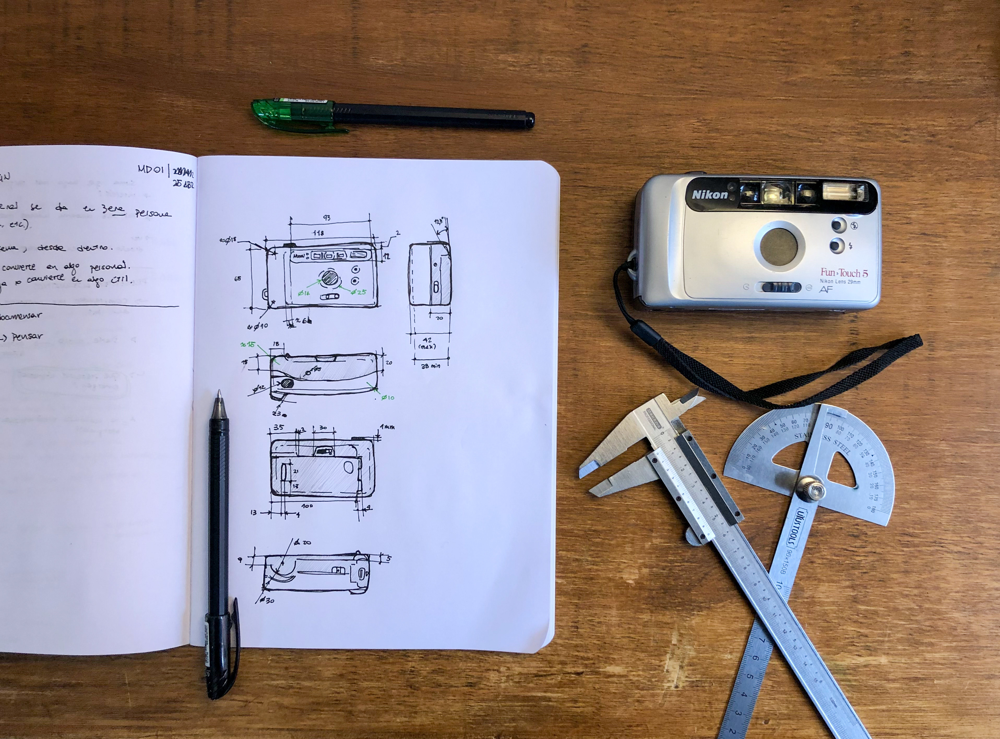
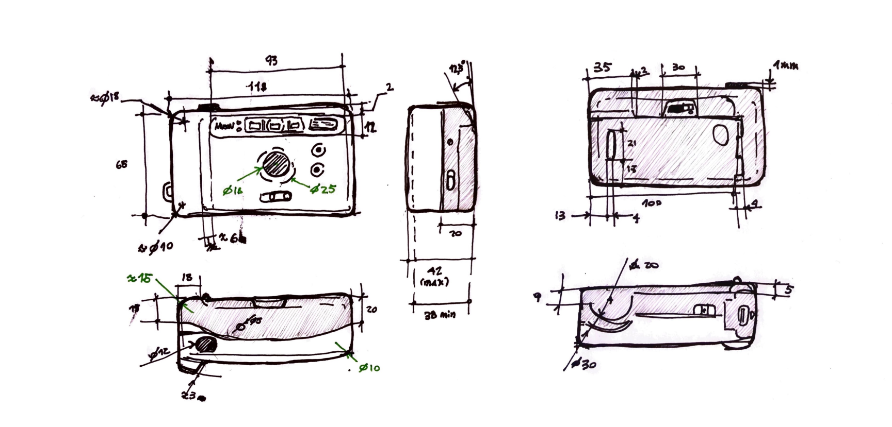

MT02¶
Introducción¶
Bajo la premisa de modelar un objeto mi entorno, luego de hacer un relevamiento del posibles productos, opté por una cámara analógica compacta Nikon modelo Fun Touch 5, del año 1997. Las motivaciones detrás de esta elección son dos: Por un lado, es un objeto funcional y formalmente interesante de llevar a un modelo 3D; presenta varios botones y mecanismos, así como una morfología predominantemente orgánica, que puede resultar desafiante de replicar. La segunda razón es de corte “afectivo” y es que, si bien las cámaras fotográficas son objetos de mi interés, está en particular ha sido la cámara familiar de mi infancia.
Herramientas utilizadas¶
- Modelado 3D: Fusion 360
- Trabajo vectorial: Inkscape
- Maqueteado y diagramación de lámina de presentación: Affinity Publisher
Proceso¶
Relevamiento¶
Se comenzó realizando un relevamiento dimensional y formal del objeto. Para este fin se utilizó un calibre, regla, semicírculo transportador.  
Trabajo 2D y vectorial¶
Para el trabajo vectorial se utilizó el software Inkscape, ya que me parecía una bena oportunidad para utilizar otro software vectorial que no fuera Adobe Illustrator, que es el que utilizo generalmente. Además, dado que el programa es open source y también fácil de descargar, pero al mismo tiempo incluye las mismas capacidades de Adobe Illustrator que necesitaría para este trabajo, me pareció una buena oportunidad.
Por un lado, se generó un logo identificatorio personal para incorporarlo al modelo 3D, pero también para incorporarlo como elemento de identidad al sitio web (por ejemplo, como favicon) y para este proyecto. Partiendo de un boceto en papel, en el software se configuró una grilla de con módulos de 4x4 —subdivididas a su vez en 4x4— en donde a partir de figuras geométricas simples y operaciones booleanas, se representan las iniciales de mi nombre: P y C.


Por otra parte, se editó un archivo con el logo de Nikon en formato .svg para eliminar el elemento ®, ya que este no era un objeto cerrado y podría presentar inconveniente al importarlo al software de modelado 3D, para incorporarlo al modelo. Este logo se incorporará en el producto a modelar.
Ambos elementos, tanto el logo personal como el de Nikon «arreglado», serían importados al modelo 3D como archivos .svg, en bajo y altorrelieve respectivamente.
Modelado¶
A partir de las dimensiones relevadas se procedió a modelar el producto en el software de modelado 3D Fusion (anteriormente llamado Fusion 360). La decisión de utilizar este software, con el que ya tengo experiencia, se basa en que me interesaba poder practicar el modelado de objetos y transiciones orgánicas mediante el uso de surfaces. A su vez, me permitía iterar en el modelado arreglar diferentes inconvenientes de forma práctica a través de la linea de tiempo y también extraer de forma fácil archivos para compartir en distintos formatos.
El modelado se realizó principalmente, partiendo de la generación de un volumen base mediante lofts. Esta geometría fue subdividida y modificada con volúmenes y planos añadidos y sustraidos, entre otros. En el video se presenta el modelado del producto.
La pricipal dificultad encontrada en este proceso fue la realización de la transición en la zona del frente que sobresale, con la parte que «la recibe», pues incorpora elementos de corte orgánico sutiles en dos niveles de altura. Esto fue realizado con elementos de modelado de surfaces, pero se entiende que podría haber sido conveniente explorar herramientas de form. Con el objetivo de desarrollar la forma deseada, se utilizaron en ocasiones reiteradas lofts y patches, muchas veces teniendo que subdividir el volumen para dar con ejes o perfiles que sirvieran para «apoyarse».
Renderizado¶
Utilizando el motor de renderizado de Fusion 360 se realizaron los renders del producto. Para poder incorporar más luces que favorezcan al render se incorporaron tres objetos —bodies con material emisivo asignado— posicionados para destacar el bajo y altorrelieve. Estos objetos están presentes en el archivo .F3D que se puede descargar más abajo.
Escena inicial

Objetos con material emisivo

Seteo escena

Configuración del output del render

Resultados finales¶


Preparación de archivos para impresión 3D¶
El modelado fue realizado con la intención de dar con una representación fidedigna del producto real. Sin embargo, para poder desarrollar archivos que sean reproducibles mediante impresión 3D, fue necesario modifiar componentes del modelo, uniendo componentes y piezas para dar con mallas que no generen errores. A partir de eso se desarrollan 7 piezas en .STL.
01.Cuerpo frontal

02.Cuerpo posterior

03.Tapa posterior

04.Tapa baterias

05.Slider apertura

06.Obturador

07.Frente visor

Descarga de archivos¶
Piezas separadas en .STL¶
Archivo completo en .STL¶
Archivo completo en .F3D (nativo de Fusion)¶
Lámina de presentación¶
 Descargar lámina de presentación en formato .PDF
Descargar lámina de presentación en formato .PDF
Sobre el desarrollo de la lámina¶
La estética de la lámina toma como referencia a la del empaque original de la cámara Nikon de 1997, de ahí la elección de la paleta de colores y la inclusión de una fuente tipo serif (Libre Caslon Condensed).
Con la idea en mente de que el uso de Inkscape me permitió de cierta forma «liberarme» del uso de programas de la empresa Adobe para manejar vectores, me parecío que era una buena oportunidad para hacer lo mismo para maquetear la lámina de presentación. Para desarrollar una pieza de este tipo normalmente utilizaría un programa de edición vectorial orientado a piezas gráficas, como lo es Indesign, ya que me permite generar estilos de texto y colores, así como trabajar con imágenes linkeadas, lo que me posibilita trabajar de forma más eficiente. Luego de buscar alternativas de programas de ese estilo, di con Affinity Publisher que, si bien no se trata de un programa gratuito, tiene un período de prueba sin costo, por lo que me pareció oportuno para este caso. Si bien no lo habá utilizado con anterior, al seguir Affinity Publisher un modelo mental similar al de Indesign u otros programas vectoriales, me resultó bastante práctico y amigable de utilizar.
Espacio de trabajo en Affinity Publisher

Maqueteado en Affinity Publisher

Reflexiones y observaciones¶
Como resultado de este ejercicio se pudo modelar en 3D un objeto que sirve tanto para realizar renders y visualización de productos, como para ser recreado mediante impresión 3D, y que incorpora geometría —a modo de logos en alto y bajorrelieve— desarrollada a partir de vectores tabajados en Inkscape.
Al tratarse el producto representado de uno que originalmente no está pensado para impresión 3D, sino que para inyección en plástico —por lo tanto, con lógicas productivas diferentes— y cuyo mecanismo interno no es conocido completamente (ya que sería necesario desarmarlo y relevar el funcionamiento de los componentes a nivel mecánico), fue necesario adaptar el modelo desarrollado para que sea factible en impresión 3D, permitiendo aún así lograr renders que representen al producto real. Para lograr eso, en algunos componentes se requirió del desarrollo de variantes de aquellos originales, mediante la simplificación o combinación de piezas, teniendo en cuenta que a nivel de una potencial impresión 3D no serían funcionales (en tanto la finalidad del objeto, en este caso una cámara). Es por esto que el archivo final, disponible para descargar, incorpora componentes tanto para visualización y para impresión, distinguidos en su denominación. Los casos puntuales donde sucede esto son la carcasa frontal y el protector del visor.
A nivel del procedimiento desarrollado y las herramientas utilizadas, me resultó interesante el uso de herramientas que no utilizo con frecuencia, como es el caso de Inkscape. Si bien la he utilizado en el pasado, no recordaba que su uso fuera tan ameno como me resultó (probablemente producto de mejoras en el software) y a pesar de tener que adaptarme a otros workflows, ya que estoy acostumbrado a programas de manejo de vectores, como Illustrator, Indesign o Figma, no creo que Inkscape me haya limitado o que no haya logrado lo que tenia intención de hacer, entendiendo claro, que se trató de algo de baja complejidad. En ese sentido, consideraría utilizarlo a futuro, al menos para el diseño de elementos en 2d de baja complejidad y más aún si teniendo en cuenta que es un programa open source de fácil descarga e instalación.
En relación al modelado 3D, entiendo que fue positivo el proceso, pues pude practicar en el trabajo con superficies en Fusion; aspecto que me resultaba de particular interés pues creo que son particularmente útiles (e igualmente complejas). Respecto al resultado alcanzado igualmente creo que hay varios aspectos y resoluciones que se podrían mejorar (o al menos resolver de forma más óptima) como la transición entre planos del frente del producto. Entiendo que el modelo podría haberse desarrollado en diferentes softwares de modelado 3D, pero en particular en Rhino, dado las numerosas herramientas y capacidades que presenta para modelado de corte más «organico» y con superficies. A futuro creo que sería pertinente explorar en dicho programa.
Finalmente, si bien pretendía realizar los renders del producto en Blender, producto de querer optimizar tiempos, opté por realizarlo con el mismo Fusion. Y si bien me encontré con ciertas limitaciones, como el manejo de fuentes de luz o el trabajo con materiales, creo que es realmente práctico en casos donde se quiera iterar rápidamente en el desarrollo o modelado de un producto, pues se pueden lograr representaciones fieles, en poco tiempo.